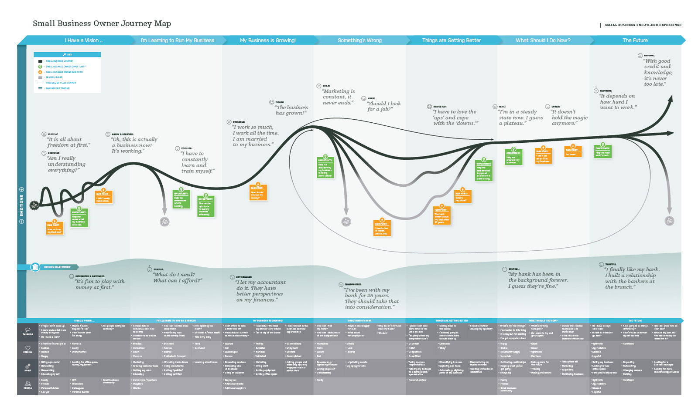

Got an interesting project to discuss?
Give me an email or connect with me on LinkedIn.


Got an interesting project to discuss?
Give me an email or connect with me on LinkedIn.
The following is a casestudy on work done for Capital One, showcasing Small Business Merchant Systems.
Small Business
Full-Stack Team
Agile Path/IDEO
UX Designer
Collaborative
Mentoring
Hands-On
Team player
Figma/Sketch/Invision/Adobe CC
UX Reseach & Testing
UX/UI Design
Interation Design
Service Design
Point-of-Sale & In-Person
The Capital One ecosystem encompassed diverse elements, including a mobile banking app (Spark Business), a Point-of-Sales app (Spark Pay), and an extensive array of merchant services. These merchant services encompassed physical terminals, marketing, customer support, and fraud/AML measures. This complex landscape presented a unique challenge, but the ultimate vision involved a significant advancement: the seamless integration of e-commerce capabilities into this multifaceted ecosystem.
Capital One's Spark Pay faced a critical challenge rooted in an outdated design that not only clashed with Capital One's established brand identity but also failed to adhere to essential style guidelines. This disjointed design was coupled with diminishing customer adoption and an increasing volume of customer complaints. I needed to fix the current set of pain points, and then work across disciplines and silos to raise the bar on both customer service AND usability.
The complete ecosystem included a mobile banking app (Spark Business), a Point-of-Sales app (Spark Pay), and merchant services (physical terminals, marketing, support, with fraud/AML). Spoiler Alert: we would be adding e-commerce.
First I loosely defined our users and inspected our value proposition. Immediately I realized we had two sets of users - the small business owners (or administrators), and their employees. Our value proposition was to provide a payment gateway for Point-of-Sale (POS) merchants backed by management tools like invoicing and inventory. With this in mind I did some further exploration:
Competitive Landscape: I audited the competition by creating a grid of all features represented in POS payments, compared app store reviews, and got a feeling for the market share per company. At the time, Square had the largest footprint on the west coast, with Capital One branches helping the east coast presence. Square's user interface was slicker and their hardware more minimal, but they weren't FDIC insured nor did they answer the phone when customers called. So we could beat them as a service if we upgraded our look and feel and fixed some customer pain points.
Current Customer Pain Points: Now that I knew the external inputs, I researched inward to see what current customers were saying. It wasn't great (current App review ranking was 1.6 out of 5), but we did have some functional support - it just wasn't online or responding to Twitter. I immediately gathered those findings and ran some customer interviews to validate my assumptions. Additional pain points were found and added, and the entire list was ranked by effort and impact to prioritize them in the redesign. Additionally, the entire team started a secondary project to map the Small Business owner's customer journey to find areas we could innovate or disrupt in.
I ran a company-wide Design Sprint to croudsource pain points from all NINE stakeholders and to create some quick click-through prototypes for end-of-week feedback. Armed with that information and a new network of enthusiastic product owners, the real work began!
Inspired by the Design Sprint's outcome, I initiated a concerted effort to break down the barriers between different departments and foster cross-discipline collaboration. This entailed close collaboration with teams handling the mobile banking app, Point-of-Sales app, and various heads of merchant services (ops/risk/fraud/CX). The goal was to establish a unified customer experience and service standard that seamlessly transitioned across the ecosystem.
I did a quick rapid redesign which focused on fast-following current industry leaders and implementing new features defined from the design sprint. I overhauled the sprint tickets to have epic milestones that aligned with actual business requirements, and created a roadmap that could be shared consistently with leadership. Now that the due-diligence was done, I helped evangelize the UX strategy throughout the company and ensure Design had a seat at the business strategy table.
Our updated designs were tested on usertesting.com first, and then with actual customer interviews. We ran "wine & dines" where real small business owners would come in, have dinner, and discuss their pain points before finally reviewing the prototypes. We worked with Agile Path to create a customer journey for small businesses and highlighted pain points where we could possibly help. This was a thousand foot view and didn’t always translate directly into application changes, but it did help us prioritize our next steps in the following quarters.
Animation Examples:


Small Business Owner Journey Map

By synthesizing the feedback of current customers and the journey of small business owners we were able to underline a severe hole in our product offering: e-commerce. Specifically, the ability for a small business to sell online and use the same inventory system that Spark Pay merchant services uses. In other words, you could sell via the web store or an ipad and your inventory count would still be correct. This was shared with leadership and would result in the purchase of Americommerce, a Texas-based online store creation company.
At this point I took on more responsibilities within the company, and was promoted to Sr. Design Manager. Beyond managing the team, running scrums, and making sure every sprint includes customer-driven changes to the application.
QA/QC: We migrated from collecting feedback by hand to monitoring Twitter keywords and hashtags. We used some machine learning to tag sentiment, and I would weekly highlight top comments and track NPS scores during our Design Critiques. As the Design Manager, I would also liason with leadership and create OKRs for the team (including customer-driven changes in each build being the key one).
By synthesizing the feedback of current customers and the journey of small business owners, we achieved remarkable key results that underscored a significant gap in our product offering: e-commerce. Particularly, we recognized the need for small businesses to seamlessly engage in online sales while maintaining synchronized inventory management, in line with Spark Pay's merchant services. Our proposal to integrate this capability was shared with leadership and culminated in the strategic acquisition of Americommerce, a reputable Texas-based online store creation company.
Subsequently, we executed a series of strategic steps to actualize this vision. We expanded our team by bringing aboard two additional designers who adeptly adapted my initial designs and advocated for each platform. Furthermore, a front-end engineer was added to our lineup, and we initiated constructive collaborations with Americommerce to establish a more tightly integrated system.
- In the final analysis, our concerted efforts yielded profound outcomes. We elevated the Spark Pay mobile app scores from an initial 1.6 to an impressive 5, eventually stabilizing at a commendable 4.2. We also instituted an enduring feedback and support system that empowered our users and demonstrated a commitment to their needs. Most notably, we addressed a significant gap in the Small Business Suite by successfully integrating true e-commerce functionality.
- Our contribution extended to enhancing the Capital One National Small Business banking application. We pinpointed and rectified a leaky onboarding funnel, significantly boosting throughput by a remarkable 350%. This achievement was made possible by attentively listening to our users and proactively engaging with Small Business owners, reaffirming the indispensable role of customer feedback in our endeavors.
- Finally, to stimulate innovation and encourage customer-centric enhancements, we conducted hackathons, which sparked imaginative thinking about novel features. Additionally, we engaged in more design sprints with leadership, bolstering our designs and fostering innovation. These events will continue moving forward!
None of these advances could have been done without listening to the users and speaking to Small Business owners!
And there you have it! I'll leave you with a poster I designed to stir up interest in a hackathon we ran after the redesign was first published. Innovate and disrupt!

About C1 / Small Business